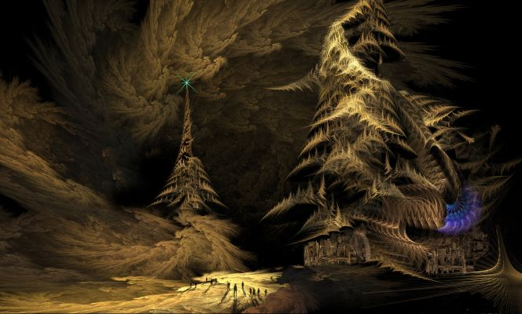

Embrace the Night (Part 4)
by
Tais Teng
Marat, age 22
Marat was the High Lord, the king of the Lesser Redoubt, but a quarter of a million years had passed since Rabath's last known incarnation. In the meantime there had been a thousand dynasties, revolutions, emperors and usurpers. Several powerful families considered the Lesser Redoubt their personal property.
The first murder attempt came on the second day, even before the official inauguration.
"There is dead man with a still-smoking fire-lance lying in front of our sleeping room," Dunja informed him.
Marat turned the man over on his back. It took no effort: the assassin was a shriveled husk, sucked dry of more than his lifeblood.
"She is still protecting you," Dunja said.
"Us. I saw you two kissing."
"Well..."
"It doesn't matter. She has good taste. We can both agree on that."
He called the Censors, pointed to the dead man.
"Do you know who this is? His shoes are hand-stitched. Much too fine for a commoner. Anyhow, a fire-lance is a dueling weapon for the upper class."
"This is the nephew of lord Desmund of the Nine Jade Flutes," their commander said after a slight hesitation. "The family owns sixteen upper cities and two Deep Gardens."
"No longer. Throw all who bear that name from the topmost balcony."
"That his nephew...I mean that doesn't prove that lord Desmund himself..."
Marat turned to another Censor: "Kill him."
"Certainly, lord." His diskos jabbed upward, severed the arm with the half-raised weapon from his commander.
"You can follow orders," Marat said. "That is good, commander. No, make that general or whatever you call a head of the king's personal army. Now about lord Desmund..."
"I'll take care of it, your highness."
"Your highness", that was even better. "King" was a very obscure title from the dawn of man. The Censor had done his homework.
There were four more attempts, two thousand executions, and then the families of the Great got the message: King Rabath was there to stay.
Below the Lesser Redoubt the Deep Gardens stretched. There were almost as many fields as cities. Some were fields with raspberries as big as your fist, others lakes with star-ship chlorella or misty jungles. Their biologists had counted every gene and could cross a weasel with a tomato.
Marat called the guild-master of the most productive field to his secure room. Nine Censors flanked him. Nine more stood hidden behind curtains of chameleon-silk.
He opened his hand: "This is the most precious object in the whole Redoubt."
"A seed, Your Highness?"
"A seed from the Pomegranate of Immortality. Star-ship pilots used it to complete their thousand-year-long journeys. Can you unravel its code? Grow me a new tree?"
"We are no Road Makers, lord, no demigods. But we can try."
"See that you succeed. I personally knew a Road Maker and she wasn't able to grow a new tree."
"I...understand."
"If you succeed I'll make you the Viscount of, eh, All Deep Gardens. And you will be rich and powerful beyond all dreams of avarice. If you fail..." There are sentences a certain kind of ruler doesn't have to finish.
The guild-master returned three month later and handed him a pomegranate. The color seemed slightly less red but that could be the light.
"It wasn't that hard, Your Highness. It produces viruses that invade every cell and make an optimal copy of the nucleus. Every time a cell mutates, the backup rectifies it. It is impossible to get sick or to grow old."
"You tried it?"
"I injected it in a rat and put her in an accelerated time field. After the equivalent of nine centuries the rat was still alive."
"You told nobody, as I ordered?"
"Of course, your Highness." All color fled from his face and his lips turned gray. The most logical thing Marat could do now was kill him to keep the secret.
Marat turned to his head-Censor.
"This man is now the Viscount of All Gardens." He smiled. "And forever too, I guess."
Never waste a competent man, he thought. They are so very hard to find. And murdering everybody who crossed him would set a pattern, made him predictable. No, better toss in some random acts of generosity to muddy the waters.
He went to his queen, put the pomegranate in her hand.
"This is the Pomegranate of..."
"Yes, of immortality. I know. You think I would go to sleep while you and that floozy..."
"Ah, clever girl."
She took a bite from the fruit. "Well, it is good to know that you trust me. That I am truly your queen."
"I made a promise," he warned her. "I have a appointment to keep."
"Half a century is a long time. And at the end I'll still be young." The juice of eternal life ran down her chin. He took her in his arms and kissed her forehead so she could keep on eating. He loved her, he truly loved her and would have gladly spent eternity with her. That day.
Marat, age 42
He never thought of himself as "Marat" anymore. He was King Rabath even in his own mind.
The pneumavores and darklings had been gathering lately. Every day the circle beyond the Air Clog grew, expanded.
He tried dreaming of the House of Silence but even when it appeared all windows remained dark. Signaling by more mundane means like lasers was impossible. The line of sight was blocked by no less than two mountain chains even if his engineers used the flat earth conversion.
He called the Master of Guns up to the Observatory which he had taken as his residence. It was an old man he saw, almost hairless and with hands that kept shaking. The human genome had been optimized for a standard life of exactly eighty-three years. Up to that age a man remained strong and vigorous and then suddenly declined and died in the course of two months.
"You located the ancient blueprints and repaired the cannons yourself?" Rabath asked. "That is true?"
"True."
"I need more. A thousand guns at least. The darklings gather. They'll storm the Redoubt before the year is over."
"By then I'll be dead and my ashes scattered across the Deep Gardens. And no, lord, I can't build even a single new cannon. I need niobium, three kinds of rare earth, webs of doped were-glass. There is none to be found in the whole Redoubt. We used all of the rest to erect the Air Clog."
"Outside? In the Night Land?"
"Consult the Master of Geographers. He'll have maps of the prehistoric mines, perhaps even a satellite survey."
A week later the Master of Guns was dead, but there were others who could read the blueprints, and they had the repaired guns as examples.
The first sortie failed and almost ten thousand soldiers were killed, their souls eaten. It was clearly impossible to breach the encirclement.
"Kites," Dunja said. "Remember the Festival of the Failed Birds in Grand Montmartre? Those boys flew for hours and almost none of the soul-eaters have wings."
"You are a genius!"
The wings were transparent and even against the curtain of fire almost invisible. Another ten thousand men, most of them boys to cut the weight, swarmed from the Tower of Observation. The beacon on top of the tower flared, a dazzling jale that blinded any being gazing in that direction.
Almost a hundred returned.
It was enough.
Three months later the guns fired. Pale lines swept across the army of the night.
Rabath stood in front of an observation window, his arm around his lady. The blades of a half a thousand scythes, he thought, and I am the Grim Reaper. See them go down. He no longer believed he was a man. One so powerful must surely be a demigod at least.
That night he dreamed of the House of Silence and all windows were lit. It must have been an ordinary dream, though, because nobody answered when he cried Lurella's name.
He awoke with a start. Dunja lay next to him, her eyes wide open, her mouth a thin line of disapproval. "Do you already call for her? It has been only twenty years. You have still thirty years to go."
"It was just a dream."
Marat, age 47
"You are sure?" Rabath asked.
"Very sure, Your highness," his Supreme Commander said. Lemuil was the second most powerful man in the Lesser Redoubt but he was utterly without ambition. Some are born to follow and Rabath was the most perfect master he could want.
"Do you have any idea why?"
"Well, she thinks you are a monster. A night-hound in human shape. Sorry, that were her own words. And the other conspirators agree. The assassination is set for three days from now."
"The queen might have a point. You have to go back thirty thousand years before you find a leader that killed half as many people."
"But the fields in front of the Redoubt are empty for the first time in history, lord. Our patrols roam all the way to the Great Sea. We mine tellurium and niobium in the Land of Humpbacked Men. Fortresses guard the Upward Gorge."
"Kill her. Mercy is a luxury no warlord can afford. Don't use poison. She is immune to all poison."
"I'll keep that in mind, your Highness."
"We are at war, you know. Still at war with the whole Night Land."
They hadn't slept together for three years. Still his bed felt particularly empty that night.
Marat, age 56
The crusade against the Dark faltered, then turned into a rout. The guardian fortresses lay in ruin, with the whole Upward Slope lost. The Night Land could breed monsters faster than humans could make babies. A single night-hound threw litters of nineteen and that every year.
Nobody knew how the Silent Ones reproduced, but no matter how many Rabath's armies killed, the next time a lot more walked down the roads.
Deep inside the world something shifted. Perhaps a stream of liquid nickel-iron changed direction in the core or the magnetic field lost its polarity. The earth current faltered, then shut down completely.
Rabath wasn't in Redoubt when the Air Clog failed. He was driving down the road in a car armored with scales of condensed glass when the cry for help came.
"There are Silent Ones everywhere!" came the cry of his Supreme Commander. "They tunneled down to the bedrock. Came up from the Deep Gardens and..."
Rabath raised his hand.
"Stop the car. I want to go outside."
He stepped on the newly laid road and the diamond felt very familiar beneath his feet. He waved at his chauffeur: "Drive on. I'll catch another car."
He was quite sure that the war was lost this time. Rabath turned his back on the Lesser Redoubt and started the long walk to the South.
A night-hound jumped on the road, glared at him. Rabath didn't even touch his diskos.
"You know know who I am," he said. "I killed so many of you."
"Rabath," the night-hound rasped and it was the first time he had heard a night-hound speak. "I know you. You are the Night. You are the Dark and the Mistress of the House is your lady." He scrambled back from the road and fled between the trees.
Rabath didn't know how to tame a manshonyagger or even where to find one. It took him a full three years to reach the House of Silence.
Lurella waited for him, sitting on the skull of a giant and gazing into the sky. He sat down next to her. Rabath's eyes had become hypersensitive after three years of unceasing night and he could see the dead sun now, a circle of the most intense blackness possible.
"The earth current never failed before," he said.
"Well," Lurella said, "I got a bit impatient. I was waiting for you to turn into the perfect monster. To become like me. And it wasn't as if you had to learn anything more after you ordered Dunja killed."
"You are right." He turned his face away from the sun and kissed her. Her lips tasted like cinnamon and anise. She laughed and licked the tip of his nose with a tongue thin and scaled as a snake. So beautiful, so strange, he thought, so deadly, and his heart swelled with pride and joy.
Marat, age 179
Several of the windows of the House doubled as viewing-screens, looking out upon former times. One small window, no larger than a porthole, showed a dismal seashore with the bloated sun filling half the sky. She was a dull red and covered with a rash of sunspots.
A man stood on the shore, next to an antique contraption of brass and ivory. He gazed at the desolate scene and when something flopped and cried out in the red distance he shivered and climbed back on his machine. There came a pulse of the purest jale and the sands lay empty. Three heartbeats later the scene started all over again.
Lurella herself was often to be found in front of another, much wider window.
There was the same sun but now two brilliant golden sun-flames arced from the surface, throwing every rounded pebble into sharp relief. A wheeled city was moving in the distance to keep in the sunlight.
"My home-time," Lurella had told him the first time, "when the cities were always moving west." She would sit in front of window for hours. Was she dreaming of the sun-lit centuries, yearning for lovers now dust for an eon?
It didn't matter. She was his true love and every time he saw her something lit up in his brain, as if he were a candle and she the flame.
A third window formed an unblinking eye, fixed a thousand miles above the Night Land. Moving his fingers apart Rabath could zoom in until he could see every blade of glowing grass, the very grains of the black volcanic sand.
Both pyramids were still standing, their beacons steady. Rabath wondered who ruled the Lesser Redoubt now. The great-grandchildren of his Supreme Commander perhaps? And the Viscount of the Deep Gardens might still be alive.
They had been making love for hours, edging closer and closer to a shared orgasm. When you have eternity it pays to study all tricks of Tantra and walk the thorn-strewn path between mortal pain and glowing ecstasy. The sleeping-room with the hovering bed had been twilit, with a ceiling of glowing stars and distant spirals. Suddenly all candles ignited and the whole air seemed to turn golden, to honey.
The lure, Rabath thought. She must be ravenous. And then he realized that the candles had never before burned so bright and that he was in the middle of the House, next to its mistress. He turned and something sleek and beautiful, something deadly and without a shred of mercy, lay next to him.
"I am sorry!" she cried. "I am so sorry. I was careless, my love. I didn't notice how hungry I had become." And then Lurella broke his neck and devoured Rabath's soul.
Image and story © 2011 by Tais Teng.